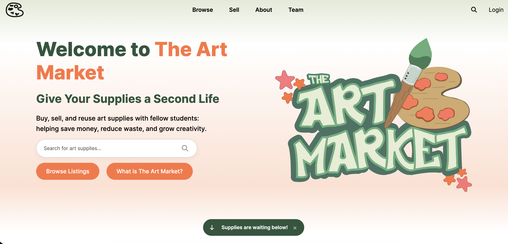
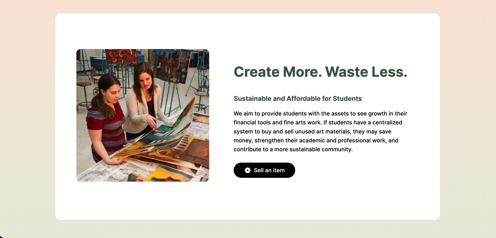
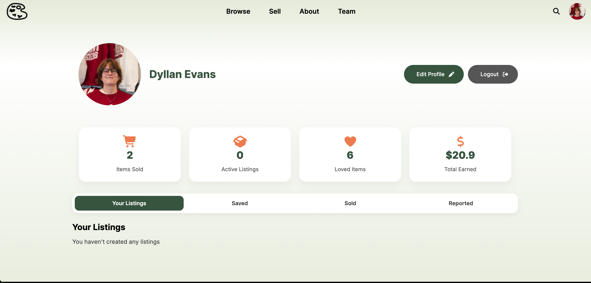
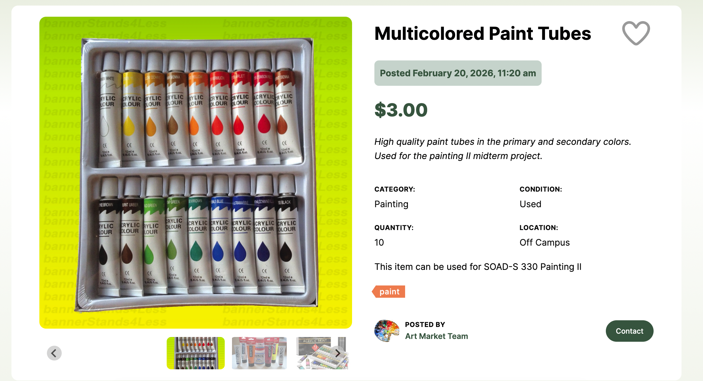

With a wide variety of Fine Arts courses from introductory drawing to advanced digital media, finding the right supplies at cheap prices can be difficult. The Art Market provides a centralized platform for students to buy and sell their old supplies. Finding the right supplies at the right cost can now be simple and local. Our projects goal was to grow a students second hand supplies while also helping their peers do the same. This page will dicuss the process of building this system with my teamamtes along with my personal challenges with this year long project.



My main task of this project was the item page and create item page. These pages run off of dynamically loaded IDs from PHP and SQL. This also includes the tag system created at the bottom. These tags are attached to items given to by the seller, and it allows for the search function to work even better when trying to find truly what your looking for. This also includes a saving feature and pending seller feature. This look was heavily inspired by other marketplaces, and this would allow for users to feel comfortable when using ours. Overall, this was my biggest acomplishment while working on this project, as it challenged my previous HTML and PHP knowledge and gave me hands on experience to challeneges and debugging systems. To see the full project, watch the video below.
